Motion Planning Applications
Workspace Calibration
Coordinating between the virtual and physical world requires establishing correspondences between points on screen and points within the robot's workspace. The simplest type of calibration employs three points used for defining a common coordinate system. The first point is typically the origin, the second defines the primary direction and the third is used for establishing the planar basis, after orthonormalization. Due to errors in measurement it is also reasonable to acquire multiple points and fit a work surface.
Target Acquisition
Sampling the physical space can be performed by jogging the robot to particular locations while using the Robot Communications component to acquire data points. The Forward Kinematics component when right-clicked features a Bake CS command for recording coordinate systems. Additionally, the orientation of the robot's flange can be acquired and used for motion planning.
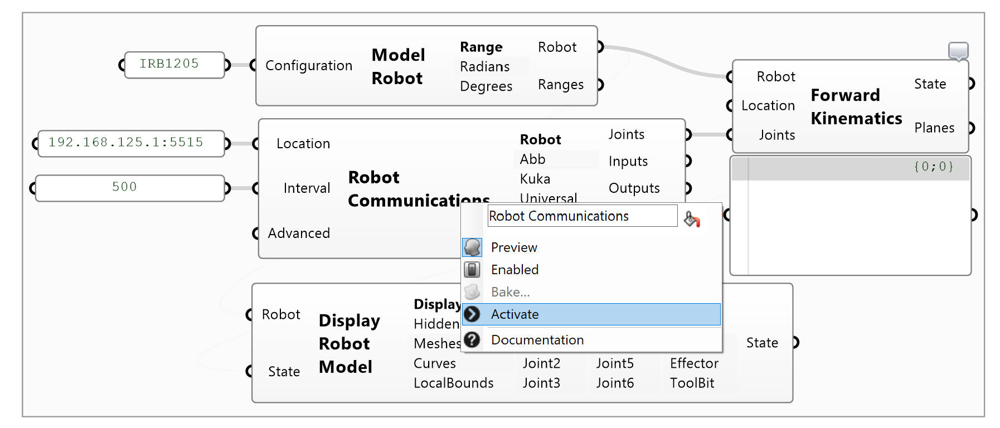
Waypoint Teaching
The conventional mode of programming robots involved manually jogging to different waypoints and recording the positions such that they can be played back indefinitely. The process can be simulated using the Forward Kinematics component and its Publish commands. First start the communications component, then move the robot and right-click the component and select the Publish Joints menu item. It will create a new list of numbers recording the current joint angles. Once teaching is complete, combine the joint angles using the Entwine component and convert the lists of numbers to joints using the Joint Vector List component. Note that it is best to store joint angles instead of planes because they are unambiguous.
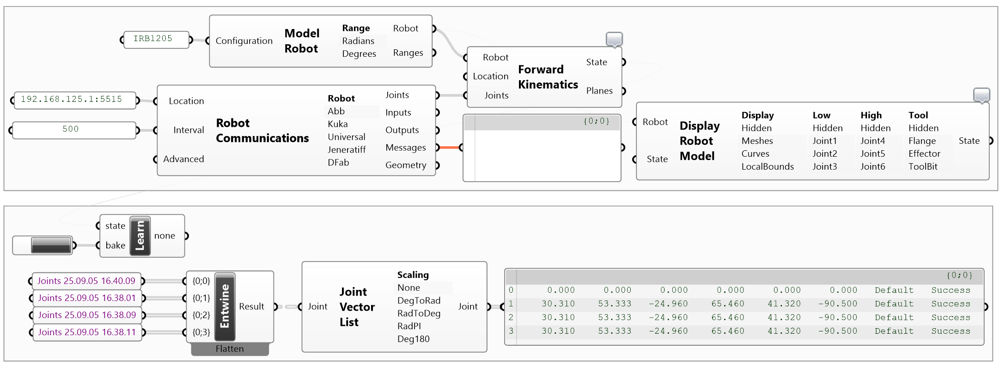
Workspace Transformation
While it is possible to create motion paths directly in the 3D frame of the workspace, it is more flexible to do so in the World frame and perform a World-to-Workspace transformation. In the figure below, first three points acquired from the workspace are used for establishing a work plane. Then the motion path geometry is translated by a vector. This is for making adjustments such as lifting the path over the work surface to avoid collisions or shifting the path within the work plane. Finally, the path geometry is transformed in the plane-to-plane sense using the Orient component. Its source is left empty because it defaults to the World-XY plane. The next steps extract the positions from the paths and use the recorded orientation of the flange to create a sequence of waypoints expressed as planes.
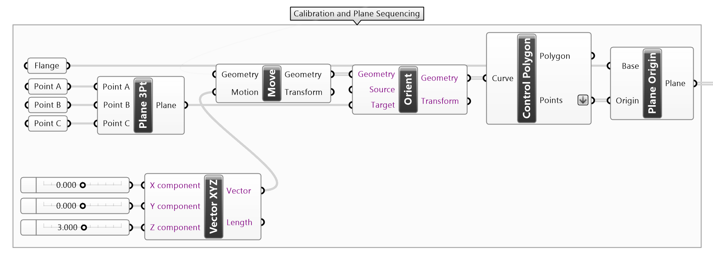
Tool Customization
In many scenarios the existence of a custom tool attached to the flange of the robot can be ignored. For example in both the 3D printing and pick and place examples we calibrate and drive the robot directly by specifying a list of flange planes. This works because: (a) we acquired the orientation of flange during calibration, (b) the motion does not require changing orientation, (c) the tool shape does not change dimensions, and (d) the motion only involves translations.
If these conditions are not met, then we need additional geometric modeling operations. To define a tool we need two pieces of information: (a) the shape, as in the actual geometry of the tool, for visualization purposes, and (b) the relationship between the flange and the tool center point in the form of a coordinate system transformation.
Drawing a new tool is straight forward, however, do model it as if the world's XY plane represents the flange frame for convenience. Additionally, a plane must be defined such as at the middle of the jaws of a gripper or at the tip of and extrusion nozzle. The axes of the plane maybe defined based on what is convenient.
To define a robot motion task using the tool then requires a transformation from the desired target planes onto the flange of the robot. This is computed as seen in the python code below. Conceptually, we map between the target plane on to the world's XY plane, then apply the tool transform to find the flange and then move back into the world target frame.
from Rhino.Geometry import Plane, Transform
target = plane.Clone( )
if( active ):
p = Transform.PlaneToPlane( Plane.WorldXY, plane )
P = Transform.PlaneToPlane( plane, Plane.WorldXY )
T = Transform.PlaneToPlane( tool, Plane.WorldXY )
target.Transform( p * T * P )
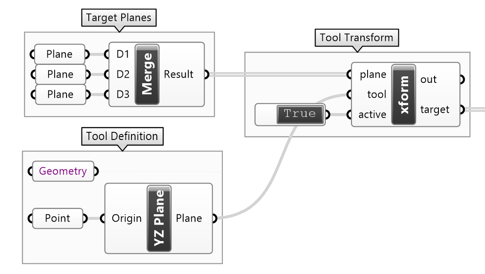
Continuous Motion
Any 3D curve can be converted in a motion path using standard operating procedures as follows: First the curve must be sampled along its length at some intervals. Instead of sampling points, however, we need to extract planes. Planes are needed for establishing both the position and orientation of the robot's TCP. By default the planes generated by curve segmentation follow the tangent, normal and bionormal convention, which is most often not ideal. This is either because of application requirements or robot joint angle limitations. Thus a bit of geometric modeling is required for establishing a feasible sequence of planes. Once they are computed, they can be directly supplied to a Robot Motion task and augmented with various settings.
Geometric Modeling
The script provided illustrates various typical plane computations. These invariably begin with a sequence of Frenet-Serret frames which are decomposed into basis vectors, recombined and reassembled into planes. If only the positions are important, then the basis vectors may kept constant for all planes. Alternatively, one vector may be retained, such as the tangent, and the secondary basis vector kept fixed. Finally, all basis vectors may vary along a motion path. When working with flange frames, keep in mind that the Z-axis of the flange point outwards is the most critical, while the rotations about it can be expressed as a J6 rotation.
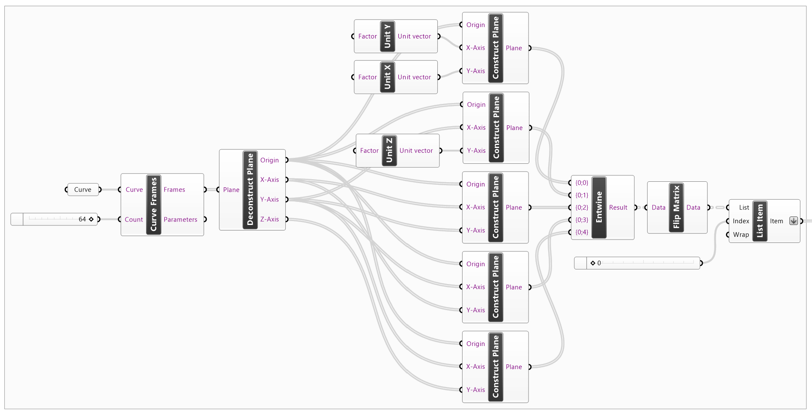
Motion Path with Events
The purpose of this segment is to demonstrate the use of event before and after a motion path. Here a motion path is created using joint angles and the gripper is toggled before/after the motion. Note that there are synchronization issues or time mismatch between the motion and signaling. This is because while the digital signal is activated almost instantly, the pneumatic gripper need a bit of time to actuate. Additionally, the motion of the robot may introduce vibrations due to abrupt stopping, so it make sense to pause before opening and closing the gripper. Delays can be introduced to mitigate these using the Robot Task / Control / Sleep operation. The Robot Task / Modify / Fuse component must be used to combine multiple operations before connecting them to the before/after motion events.
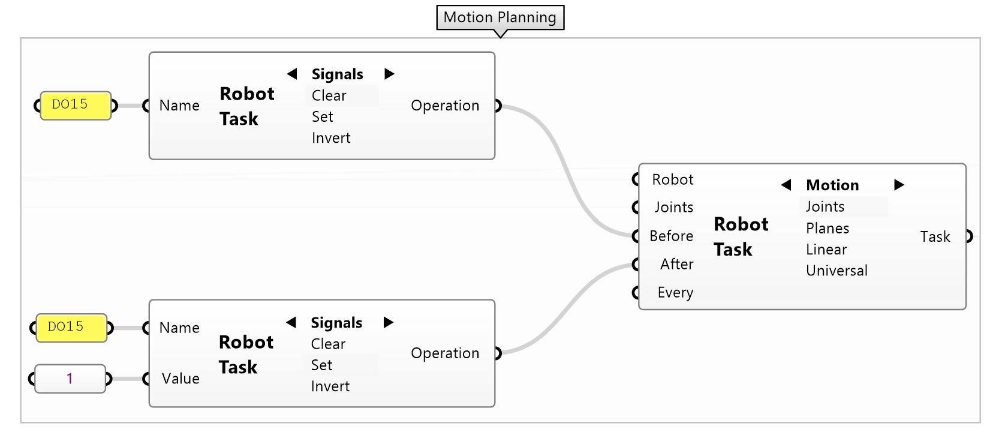
Additive Manufacturing
Additive manufacturing, aka 3D printing, with robotics is surprisingly the easiest type of motion planning application. In a typical sense the material is layered bottom-up and the tool does not change orientation but only position. Therefore, the motion plan can be considered as a lengthy sequence of planes. In this section, for simplicity, we will build the contours of a vase mode 3D printing path manually.
There are three conceptual steps: (a) creating the geometric information for the robot's motion, (b) incorporating robotic actions such as starting and stopping an extruder, and (c) simulating, compiling and sending the instructions to the controller. In general, the first step is very process-depended and most modeling-intense. The second step is a bit more standardized because only signals and control parameters are introduced. The last step can be reused verbatim in most parametric modeling scenarios.
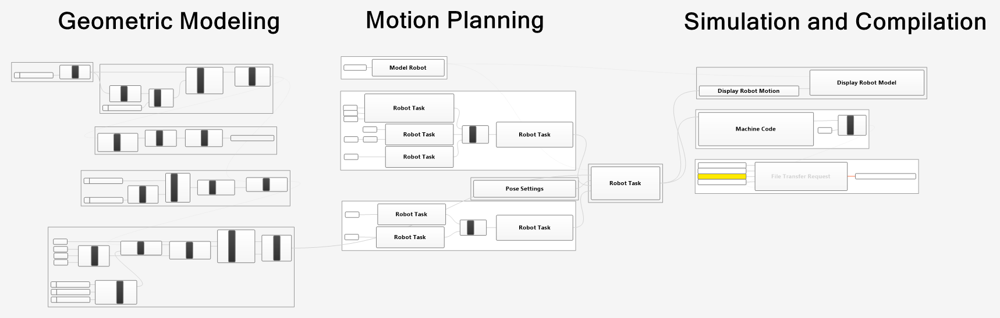
Geometric Modeling
In vase mode, the machine path for a 3DP printer is just a continuous sequence of positions in space. The example below builds a cylindrical surface layer by layer using circular contours, but in fact any curve can be used. The important aspect here is that curves must be segmented into polylines because we eventually need point-to-point motions. Additionally, the spacing between consecutive points must not fall below the blending radius threshold such that robot has enough time to smoothly interpolate between waypoints while retaining constant speed. This constraint can be preconditioned during segmentation or post enforced by fusing points that are too close.
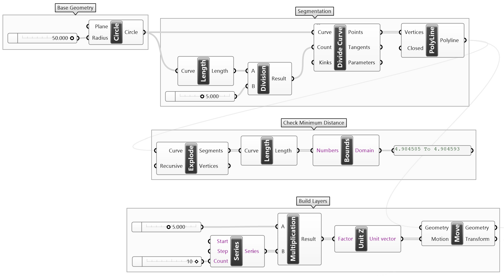
Motion Planning
Since in vase mode we only need one path, it is only a matter of setting the speed or feed rate, starting/stopping the extruder using IO operations, and adding any synchronization delays to ensure material flows along with the robot's motion. Note that the order of the delays and signal operations is important to account for the latencies between the various devices.
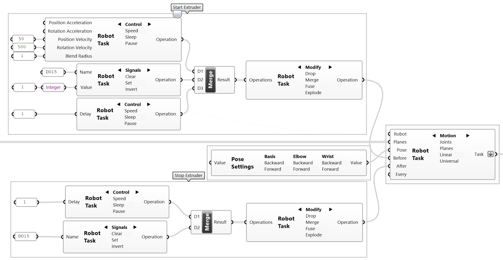
Simulation and Compilation
The last process block contains the motion simulation component which is quite important to verify that robot's configuration and motion is correct; and the machine code compilation and uploading components which ease the process of experimenting with design and prototyping.
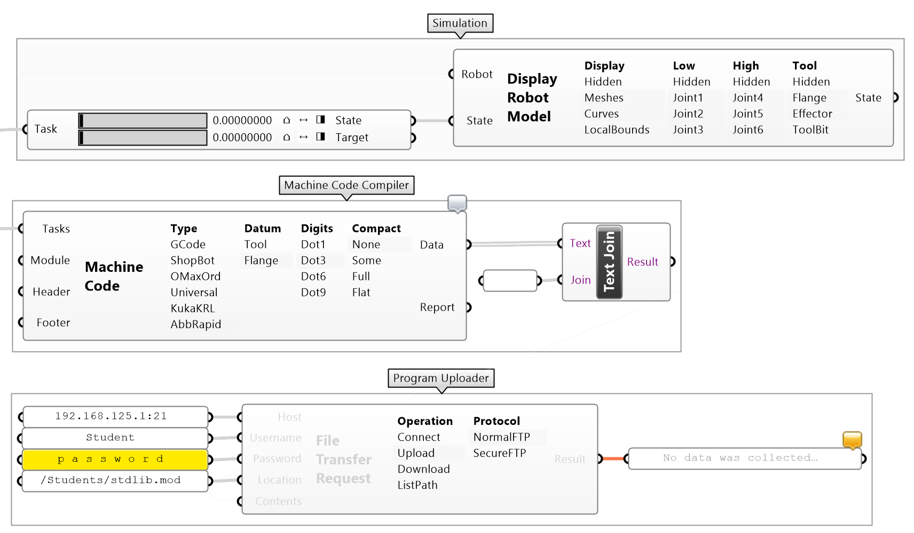
Additive Assembly
Additive assembly is performed via pick-and-place logic. It requires setting up a process where material stock is sourced from and the layout logic. Here we will assume a stationary cassette object dispenser fixed a source location and vertically stacking the objects at a target location. Compared to simple continuous motions and additive manufacturing, pick and place is certainly more involved. It requires thinking of the actions performed, finding the recurring pattern and packaging several tasks into a program.
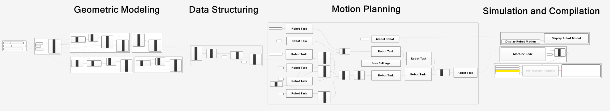
System Configuration
There are certain parameters that first need to be modeled such that there is a correspondence with the physical world. These include: the source and target locations where the object are transported from and to, dimensional information about their size and spacing as well as robot's tool flange orientation. Performing pick and place into a stack requires modeling the positions of the objects at their destination. Additionally, to safely transport objects and avoid collisions a safe zone or clearance must be considered.
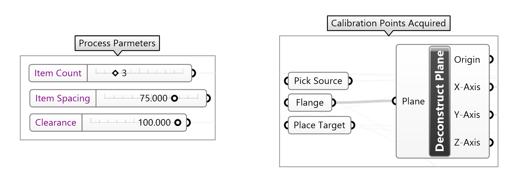
Geometric Modeling
Since there is one source location we need to replicate it as many times as the number of objects transported. As for the target locations we need to create series of locations vertically stacked based on the spacing derived from the object's height. To avoid collisions we need to approach and retract from each location with some clearance height above the source and target. Thus a total of four point lists are required to account for the actual sources (S) and targets (T) plus their clearance points above the sources (S+) and targets (T+).
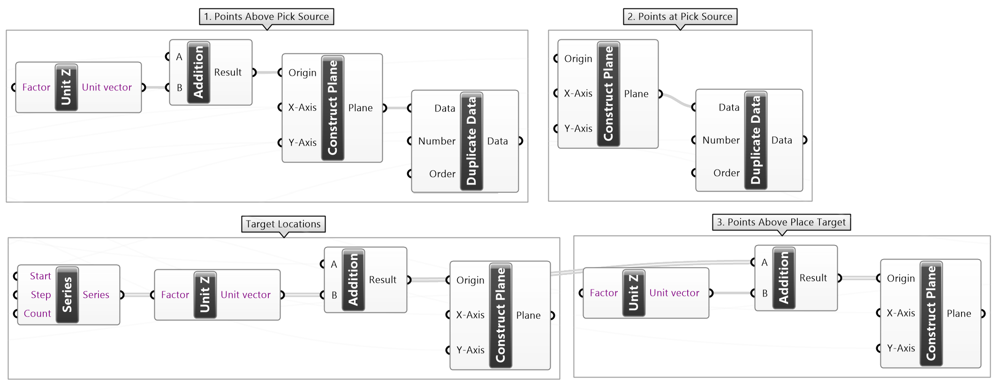
Data Structuring
Even though geometrically the process is complete we need to structure the data such that the open/close signals are nicely coordinated with the waypoints. The list of step are presented below and a figure shows the state of the gripper before and after each waypoint.
- Open the gripper
0Move above the source location (S+)1Approach to grab an object (S)- Close the gripper
2Retract above the source (S+)3Move above the target location (T+)4Approach the target (T)- Open the gripper
5Retract above the target (T+)- Repeat
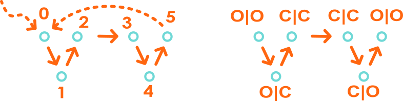
The pattern in the gripper's signal is clear: there are groups of three zeros followed by three ones. However, the pattern does not start in a regular way because of the initial conditions. This requires some data wrangling such that the first two motions are packaged in an initialization Robot Task, while the repetitive part is modeled using the lists and data trees in another.
| Pnt | 0 | 1 | 2 | 3 | 4 | 5 | 6 | 7 | 8 | 9 | 10 | 11 | ... |
|---|---|---|---|---|---|---|---|---|---|---|---|---|---|
| Bfr | 0 | 0 | 1 | 1 | 1 | 0 | 0 | 0 | 1 | 1 | 1 | 0 | ... |
| Aft | 0 | 1 | 1 | 1 | 0 | 0 | 0 | 1 | 1 | 1 | 0 | 0 | ... |
In terms of sequencing the points we need groups of six points per cycle: 0->S+ approach above the source, 1->S source location, 2->S+ retraction above the source, 3->T+ approach above the target, 4->T target location and 5->T+ retraction above the target. The plane lists are first grouped using the Entwine component which builds a 2D table of planes. Then the table is transposed such that each row contains six planes per cycle.
Then the table is flattened such that the planes of each cycle are sequenced in order. The first two planes are then separated from the list using the Split List component because they require special initialization logic. Finally, the remaining planes are grouped by three using the Partition List component. These will form the repetitive sequence for opening and closing the gripper.
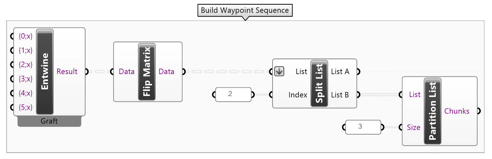
Motion Planning
The motion plan consists of two robot motion tasks: the initialization and cyclical pick and place process. The first component uses the two separated planes from the waypoints lists augmented with a signal for making sure the gripper is open before the process begins. The pick and place operation uses the rest of planes grouped by three and augments them with signals and delays. A small delay is introduced before the gripper is opened or closed to ensure that any vibrations from motion are dumped. The delay after the gripper has opened or closed is for preventing the robot from moving prematurely and accounting for the pneumatics latencies.
Note that the repetitive part of the process produces several robot tasks packed in a list. To reduce machine code verbosity, all tasks including the initialization task are merged together. Finally, the gripper toggling action can be accomplished either using the explicit 0/1 sequence produced using a python component, or alternatively it is possible to use signal inversion.
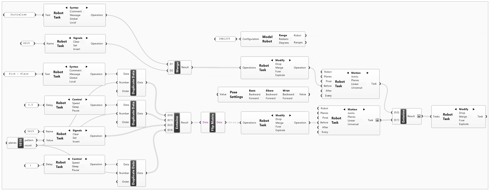
Programmed Motions
Programming the robot via Grasshopper components gets very messy very fast. Additionally, coordinating motion and signals requires some mental gymnastics for properly combining lists and tables of waypoints and operations. Instead, it is easier to approach geometric modeling and motion planning via python.
Boilerplate Helpers
The following code converts a list of planes to a list of 4x4 matrices expressing the transformation of the robot's flange in relationship to its base.
#-- Plane to Matrix Conversion
#--
from Std.Geometry import Mat4List, Vec1
from Gha import Interoperability
def PlanesToTargets( planes ):
targets = Mat4List( )
for plane in planes:
targets.Add( Interoperability.ToMat4( plane ) )
return targets
Robot Settings
The robot settings object is required for every task. It conveys the kinematics model and the pose of the robot in terms of its axis configuration. As long as the motion plan does not change posture, in terms of the inverse kinematics selection bit flag, this can be reused. In other word, use a new settings object every time the axis pose is changed.
#-- Robot Settings
#--
from Std.Robotics import SettingsRobot, Pose
settings = SettingsRobot( )
settings.Kinematics = Robot.Kinematics
settings.InitialPose = Pose( RobotPose )
Tasks and Task Lists
A task list contains one or more robot tasks. This is just a specialized version of a list. A task is a collection of robot operations. Operations are literally machine code instructions including motion, signals etc. commands.
#-- Task Definition
#--
from Std.Robotics import Tasks, Task
tasks = Tasks( )
Waypoint Sequences
This is a general purpose function for either adding a sequence of waypoints with events before a linear motion is executed or for interweaving waypoints and events one by one. For each waypoint, optionally, the speed can be changed, a delay can be introduced, the blending radius can be adjusted and a comment can be appended.
#-- Waypoint with Optional Events
#--
from Std.Robotics import Comment, Speed, Sleep, Motion, PathPolygon
def AddWayPoints( task, planes, speed = 0.0, blend = 0.0,
delay = 0.0, comment = '' ):
if( comment != '' ):
task.Add( Comment( task, comment ) )
if( speed > 0.0 ):
task.Add( Speed( task, 0.0, speed, 0.0, 500.0, blend ) )
if( delay > 0.0 ):
task.Add( Sleep( task, delay ) )
motion = Motion( task )
motion.Path = PathPolygon( motion, PlanesToTargets( planes ) )
task.Add( motion )
Geometric Modeling
This is a basic example of dividing a parametric curve with a fixed number of samples equally distributed along its domain, evaluating the Frenet-Serret frames, and constructing target planes.
#-- Geometric Modeling
#--
from Rhino.Geometry import Point3d, Vector3d, Plane, Polyline, Curve
Planes = []
for param in Path.DivideByCount( 10, True ):
_, plane = Path.FrameAt( param )
Planes.append( Plane( plane.Origin, plane.XAxis, plane.ZAxis ) )
Simple Paths with Events
Simple paths such as those used for 3D printing involve setting certain parameters prior to a motion. Then the rest of the machine code just lists the waypoints in a sequence.
#-- Linear Motion with Before Events
#--
task = Task( settings )
AddWayPoints( task, Planes, speed=50.0, blend=1.0,
comment='Constant Speed' )
tasks.Add( task )
Complex Paths with Event
In cases such as the pick-and-place scenario, finer control is required. The example below issues the planes one-by-one and adjusts the speed at each step. Additionally, the comment reports the progress in percentage of completion.
#-- Linear Motion with Every Waypoint Events
#--
task = Task( settings )
for index, plane in enumerate( Planes ):
time = index / ( len( Planes ) - 1 )
speed = 10 + 40 * time
AddWayPoints( task, [plane], speed=speed, blend=1.0,
comment=f'Progress {time*100:.1f}%' )
tasks.Add( task )
Code Generation
Creating the machine code directly without components can be achieved using the ABB Rapid code generator. It requires the list of tasks and produces the code as a list of strings.
#-- Code Generation
#--
from Std.Robotics import CodeGenerationOptionsABBRapid, Compact, Datum
options = CodeGenerationOptionsABBRapid( 1.0, Vec1.R2D )
options.ModuleName = 'StdLib'
options.Digits = 4
options.Compaction = Compact.Some
options.Datum = Datum.Flange
engine = options.Generator( )
engine.Generate( tasks )
Code = engine.Code